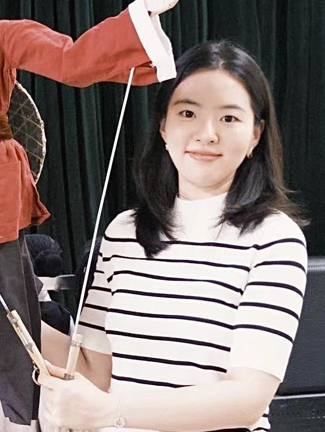

Yuruo Zhang
张雨若 · pronounced as yoo-rwoh
Yuruo Zhang is a Ph.D. student of Intelligent Manufacturing and Robotics at
Southern University of Science and Technology (SUSTech),
advised by Zhaoyuan Ma.
She is also a visiting student researcher in the
Tangible Media Group at MIT Media Lab,
working with Emma Peng.
Her research interests lie in cultural heritage and human-computer interaction, especially at the intersection of immersive experience design and telepresence robotics. She envisions leveraging interactive technologies to bridge spatial and temporal boundaries, making meaningful cultural heritage experiences accessible to broader audiences.
Yuruo has exhibited at Milan Design Week and multiple international design exhibitions. Her work has been published in top conferences, such as CHI and IASDR. Before pursuing her Ph.D., she earned her M.A. and B.A. in Design from Macau University of Technology and Science.
Research & Projects
Research on TeleAbsence, exploring the illusion of presence across time and space, bridging cultures, disciplines, and generations.
Explored the intersection of Chinese intangible cultural heritage (ICH) and interactive technologies, investigating how tangible interaction and co-design approaches can activate and revitalize traditional cultural practices. Assisted with the 2024 Chinese CHI conference and contributed to service design for the 2025 China Paralympic Games.
Founded a sustainable design program during graduate studies, developing eco-friendly biomaterials from rice husk with support from the Faculty of Engineering at HKUST. Received nearly HKD 100,000 in funding and collaboration intents from Hong Kong Science Park and Sino Group. Designed and commercialized sustainable products exhibited and sold internationally in Milano, Macau, Hong Kong, and Beijing.
News
2026
Paper accepted at CHI EA '26 (Poster), Barcelona, Spain.
2025
Started Ph.D. at Southern University of Science and Technology.
2025
Paper accepted at IASDR 2025.
2024
Exhibited at Milan Design Week 2024; won First Prize in competition.
2024
Paper published in Journal of Biobased Materials and Bioenergy.
2023
First Prize, Sustainability Impact Award at HKUST-Sino Group Million Dollar Entrepreneurship Competition.
2023
Exhibited at Macau Design Week 2023.
2022
Best Graduation Design (Top 1, Gold Award), Shenzhen Graphic Design Association.
Publications
[1]
Zhang, Y., Xia, Y., Yao, Z., & Zhang, W.* (2026). SuperShami: A Physical Serious-game Installation for Youth Embodied Learning of Heritage-based String Puppetry Practices. In
Extended Abstracts of the 2026 CHI Conference on Human Factors in Computing Systems (CHI EA '26). ACM.
doi:10.1145/3772363.3798577
[2] Chen, L., Zhang, Y., Qi, R., Zhang, W., Li, X., & Zordan, M.* (2025). Bridging the gap: A youth-centered co-design inquiry into intergenerational empathy. In Proceedings of IASDR 2025: International Association of Societies of Design Research Conference.
[3]
Zhang, Y., Cao, J., & Gong, T.* (2024). Eco-friendly innovation: Crafting bio-environmental rice husk board for sustainable living.
Journal of Biobased Materials and Bioenergy, 18(5), 950–955.
doi:10.1166/jbmb.2024.2396
Awards & Exhibitions
Best Poster Presentation Award, Greater Bay Area Pre-CHI 2026Shenzhen, China
Exhibited at Milan Design Week 2024Milan, Italy
First Prize, Milan Design Week Competition, 2024Macau, China
Exhibited at Macau Design Week 2023Macau, China
Exhibited at Cross-Strait Three Generations Designers Exhibition, 2023Macau, China
First Prize, Sustainability Impact Award, HKUST-Sino Group Million Dollar Entrepreneurship CompetitionHong Kong, China
Gold Award, Future Food +86 International Food Design Competition (Tsinghua Food Design Lab)Beijing, China
Exhibited at "Eco-Friendly Living" Macau Designers Exhibition, 2022Macau, China
Shenzhen Graphic Design Association Scholarship (Best Graduation Project, First Prize)2022
Dean's Scholarship, 2022Macau, China
Invited Talk, Qianhe Foundation — "在余料中找灵感 在自然中做设计"Guangzhou, China
Curated Exhibition "Language and Manifesto in a Small Space", 2021Macau, China